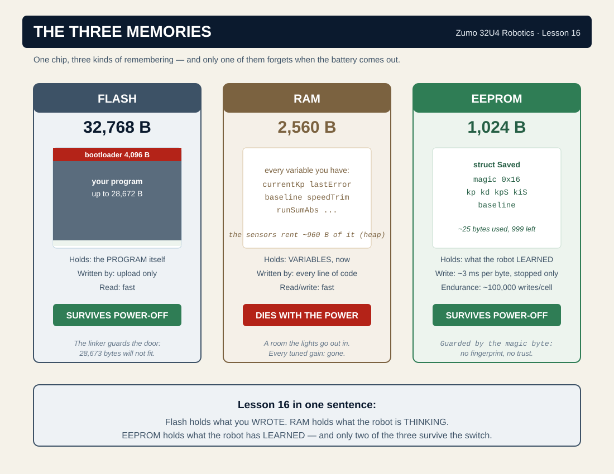
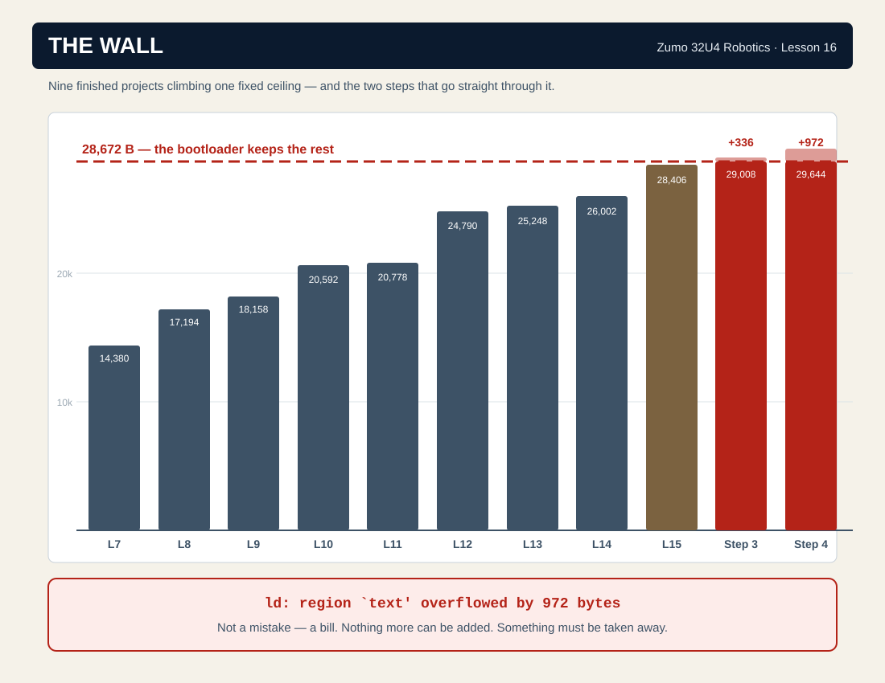
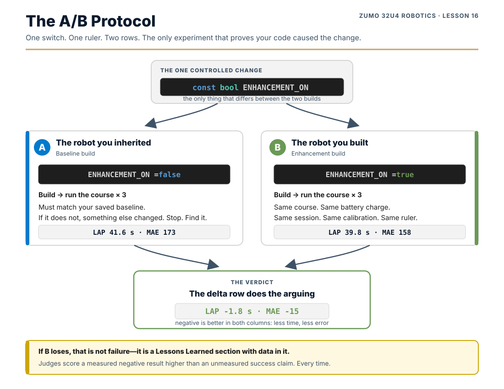

You made it. Fifteen lessons of building, breaking, measuring and fixing have brought you here. Your Zumo follows lines with a controller that sees the present and the future, crosses gaps by distance instead of hope, takes corners on a gyro that catches the wheels lying, sweeps a walled rescue zone on instruments alone, and boots through a self-test ritual that would not embarrass an aircraft.
Every one of those lessons did the same thing: it added. A sensor. A state. A loop. A number worth trusting. Fifteen lessons of addition — and here is the bill:
| Finished project | Lesson | Program size |
|---|---|---|
| Lesson 7 | Code Organization | 14,380 B |
| Lesson 8 | Line Following (P) | 17,194 B |
| Lesson 9 | Intersections | 18,158 B |
| Lesson 10 | Obstacles | 20,364 B |
| Lesson 11 | Time Lies, Distance Doesn't | 20,542 B |
| Lesson 12 | Wheels Lie | 24,534 B |
| Lesson 13 | Rescue Zone | 24,902 B |
| Lesson 14 | Competition Prep | 25,640 B |
| Lesson 15 | The Present Isn't Enough | 28,034 B |
| The chip’s ceiling | 28,672 B | |
Read the last two lines again. Your robot’s brain holds 28,672 bytes of program. Your Lesson 15 project is 28,034 of them. You have 638 bytes left — about a fifth of one percent of everything you have built — and this lesson is going to spend them, run out, and hit the wall in front of you, on purpose.
Because that is the capstone. In Lessons 1–15, I told you what to build, and adding was free. Real engineering is the other thing: the chip is full, the deadline is real, and every feature you want must be paid for with a feature you are willing to lose. This lesson teaches the last skill in the book — subtraction — and then hands you the keyboard.
Subtraction is about to get expensive, so spend the free bytes before the painful ones. Search your project for print( and find any string literal that is not wrapped in F(). Each one you wrap moves that text out of SRAM — and unlike the flash budget in the table above, SRAM overflow gives you no error at all. It gives you garbled OLED text, resets mid-run, and variables that change on their own. Fixing those before you delete a feature is the cheapest 40 bytes you will ever find. (Lesson 2, section 3.2.)
Every Showcase project stands on the same three legs:
By competition day you will submit:
By the end of this multi-week project, you will be able to:
Sections 4–6 will put a wall in front of you and teach you to take it apart. But the wall is the middle of this project, not the point of it. The point is what real engineers do around the code: scope it, schedule it, measure it, and write it down so someone else could build it. That is this section.
Every engineering project — a robot enhancement, a bridge, a phone app — walks the same eight stages. You have been walking them all year without the names. Now you get the names, because your TDP is organized around them:
| Stage | What it means for THIS project |
|---|---|
| 1. Define | One sentence: what will your robot do that it cannot do today, and how will the benchmark show it? |
| 2. Research | What does the library already offer? What did Lessons 1–15 already build? What will it cost in bytes? |
| 3. Ideate | Three candidate designs, on paper, before any code. The second idea is usually better than the first. |
| 4. Prototype | The ugliest version that runs. Inside runEnhancement(), behind your switch. |
| 5. Test | Same course, same benchmark, switch off then on. The ruler does not move; only the robot does. |
| 6. Iterate | Change ONE thing, re-run, keep it only if the numbers improved. You learned this discipline in Lesson 15’s hill-climb. |
| 7. Document | Journal every session. The TDP assembles itself out of a good journal; it fights you out of a bad one. |
| 8. Present | Competition day: the demo, the video, and five minutes of questions you can actually answer. |
The most common way student projects die is not a bug. It is scope creep — the project that starts as “save my gains to EEPROM,” grows a “while I’m at it,” and ends four weeks later as an incomplete everything that does nothing well.
The defense is the Minimum Viable Product: the smallest version of your enhancement that would still count. Define it in week one, in writing. Build only it until it works and the benchmark proves it. Everything else is stretch.
Week 1: Define the MVP · baseline your course · save it to EEPROM · pick your enhancement and price it in bytes
Week 2: MVP working behind the switch · first A/B numbers · journal entry #2
Week 3: Iterate on the numbers · record video footage · TDP half-drafted
Week 4: Freeze the code · finish the TDP and video · rehearse the demo
Stretch features are allowed only after the MVP survives the benchmark in week 2.
RoboCupJunior teams submit a TDP so judges can understand the engineering, not just watch the robot. This is not busywork — the TDP is weighted more than the video and the poster combined in the real rubric, and a well-documented robot with decent performance routinely outscores a brilliant robot with a bad paper.
Your TDP follows the real template, 5–10 pages, in this order:
| What judges look for | What it means |
|---|---|
| Clarity | Could someone who has never seen your robot understand it? |
| Technical depth | Do you explain HOW things work, not just WHAT they do? |
| Evidence | Numbers, photos, diagrams — not adjectives |
| Reflection | Do you discuss what did NOT work, and why? |
| Innovation | What makes your approach yours? |
3–5 minutes, four beats:
One entry per work session, five prompts, written at the end of the session while the details are fresh:
The ATmega32U4 on your Zumo has 32,768 bytes of flash — the memory your program lives in. You never get all of it. The first 4,096 bytes are the bootloader: the little program that answers the USB cable and writes your next program into place. Erase it and the robot still runs — once. You could never upload again without a hardware programmer.
So the budget is 32,768 − 4,096 = 28,672 bytes. That number is not a suggestion. It is enforced by the linker, the last tool in the build chain, whose job is to place every function at a real address inside the region. Ask it to place 29,298 bytes into 28,672 and it does not warn you, round down, or try its best. It refuses, and prints the most honest error message in this entire book:
Region text is the flash. Overflowed by 626 bytes means exactly what it says: your program is 626 bytes bigger than the space that exists. There is no setting to change, no flag to pass, no faster computer to buy. Something has to go.
You cannot cut what you have not counted. Here is the Lesson 15 finished project, weighed
subsystem by subsystem with the toolchain’s own scale (avr-nm reads the compiled program
and reports the size of every function in it):
| Subsystem | Approx. cost | Cuttable? |
|---|---|---|
| IMU + I²C bus (the gyro, Lesson 12) | ~2,900 B | No — your turns run on it |
| OLED display + font | ~2,600 B | No — it is your only instrument panel |
| Line sensors (QTR library) | ~2,300 B | No — the robot IS a line follower |
USB serial (the Serial object) | ~1,900 B | Partly — see Section 6, Step 5 |
| Buzzer (tone engine + note table) | ~1,800 B | Yes — your reserve. See Section 7.3 |
Heap (malloc/realloc/free) | ~960 B | No — and the reason is a lesson (below) |
| Everything you wrote in 15 lessons | the rest | That is the robot |
malloc —
and yet there it sits, nearly a kilobyte of it. It belongs to Pololu’s own sensor library: the QTR
line-sensor code heap-allocates its calibration arrays, and the proximity code allocates its pin lists.
The heap is the rent the sensors charge. When you audit a real system, expect this: some of the biggest
line items were signed by someone else, years ago, and are not yours to cancel.Everything you have ever tuned in this book — Kp, Kd, the speed
gains, TRIM, the line calibration — lives in RAM. RAM is a room the lights go out in. Pull
the battery and every number you spent an afternoon finding is gone, reset to whatever
RobotConfig.h said at compile time.

The 32U4 has a third memory: 1,024 bytes of EEPROM — electrically erasable, programmable, and above all non-volatile. Write a byte there and it is still there next week, next month, battery or no battery. It is where a robot keeps what it has learned about itself.
You have already read from it. In Lesson 1, Challenge 1 sent you to find your robot’s name and told you it lived in “permanent memory, not in this file.” This is that memory. The name sits at address 512, written once before the robot ever reached you, and it has survived every upload you have done in fifteen lessons since — because an upload replaces flash, and the name was never in flash. That was a read. Lesson 16 is the first time this book writes.
| Memory | Size | Survives power-off? | Speed |
|---|---|---|---|
| Flash (program) | 28,672 B usable | Yes | Fast read; written only by upload |
| RAM (variables) | 2,560 B | No | Fast |
| EEPROM | 1,024 B | Yes | Fast read; ~3 ms per byte to write |
loop() at 400 passes per second murders a cell in under five minutes. Saves happen on a
button press, while stopped. Always.Who owns which addresses. EEPROM is one flat 1,024-byte space with no filesystem, no filenames and no protection. Nothing stops one program from writing over another program’s bytes — the only thing keeping them apart is an agreement about who uses what. The fleet runs on this map:
| Address | Owner | What lives there |
|---|---|---|
| 0 – 511 | Lesson 16 — this lesson | The Saved block: magic byte, your gains, your baseline |
| 512 – 543 | Lesson 1 — your robot’s name | Magic byte 0x5A, then the name, written once by your teacher |
| 544 – 1023 | unclaimed | Free. If your Section 7 enhancement needs to remember something, take it from here |
Your capstone stays inside its own lines. Write to 512 and your robot loses its name — and no error message tells you, because to the hardware one byte is exactly as valid as another.
This lesson installs four pieces of machinery, and then it installs a hole. The machinery is the benchmark — the instrument that will judge your capstone. The hole is the socket your capstone plugs into. Read this section before Section 6 builds it; you will type faster if you already know why every block exists.
Lesson 15’s tuning rig scored a fixed ten-second slice, and that was correct — two gains are only comparable if the runs were identical. But a ten-second bell is the wrong instrument for a course: a course ends when the course ends, and its length is the very number you are trying to shrink. Same scoreboard, same sensors — different bell:
// ===== RUN MODE (NEW for Lesson 16) ===== // Lesson 15 scored a TEN-SECOND SLICE. Ten seconds is the right length to // compare two GAINS: same bell, same track, same everything, so the only // thing that changed was the number you turned. // // It is the WRONG length to score a COURSE. A course is not ten seconds // long - it is however long the course takes, and that length IS the number // you are trying to make smaller. // // Same scoreboard. Same sensors. Different bell. enum RunMode { MODE_TUNING, // Lesson 15's bell: TUNING_RUN_MS, then stop and score. MODE_COURSE // No bell. Run the whole course. B ends it. LAP is the score. };
One global remembers which bell is armed, and one row of the screen always shows it:
// ===== WHICH BELL (NEW for Lesson 16) ===== RunMode currentMode = MODE_TUNING; // hold C, tap A to switch
// Which bell is armed. Same row on every screen. (NEW for Lesson 16) void showMode() { display.gotoXY(0, 5); display.print(currentMode == MODE_COURSE ? F("MODE COURSE") : F("MODE TUNING")); display.print(F(" ")); }
Pillar 2 says “measured improvement.” A measurement needs two rows: what the robot did before, and what it did after, on the same course, from the same instrument. The “before” row gets a name:
// ===== THE SCORE OF ONE RUN (NEW for Lesson 16) ===== // Two numbers, because those are the two you have to argue about. // LAP says how fast. MAE says how well. A robot that got faster by // weaving harder did not get better - it got luckier, and the next // course will collect the debt. struct RunScore { float lap; // seconds, start to B int mae; // mean |error| over the run };
// ===== THE BASELINE (NEW for Lesson 16) ===== // The robot you inherited, scored on YOUR course, before you touched it. // Without this number, "it feels faster" is the only claim you can make - // and no judge, and no engineer, has ever accepted it. // // mae == 0 means NO BASELINE YET. Nothing to compare against. RunScore baseline = { 0, 0 };
Capturing it is one gesture on the report screen — hold A, tap B — and one function:
// This run becomes the "before" row of your table. (NEW for Lesson 16) void saveBaseline() { baseline.lap = runSamples ? (millis() - runStart) / 1000.0 : 0; baseline.mae = runSamples ? (runSumAbs / runSamples) : 0; }
From then on, every course report prints the only line that matters — the delta: how this run compares to the run you blessed. Negative is better in both columns: less time, less error.
Section 4.3 told you the EEPROM exists. Here is how this project uses it: one struct, written and read as one object, with a fingerprint riding inside it.
// ===== WHAT SURVIVES THE POWER SWITCH (NEW for Lesson 16) ===== // Every number you have ever tuned in this book lived in RAM. RAM is a // room the lights go out in. Unplug the battery and Kp, Kd, KpSpeed, // KiSpeed and your baseline are all gone - back to whatever this file // said when you last compiled. // // The 32U4 has 1024 bytes of EEPROM: memory that is written slowly, // read quickly, and REMEMBERS WITH THE POWER OFF. It is where the robot // keeps what it learned about itself. // // EEPROM_MAGIC is a fingerprint. A brand-new chip's EEPROM is full of // 0xFF, which would load as garbage gains and a nonsense baseline. So we // write a byte we chose, and refuse to trust the block unless we find it. // Change this number and the robot forgets everything - on purpose. const int EEPROM_ADDR = 0; const unsigned char EEPROM_MAGIC = 0x16; // "Lesson 16 wrote this"
// ===== THE BLOCK THAT OUTLIVES THE BATTERY (NEW for Lesson 16) ===== // One struct, written and read as ONE object. EEPROM.put() and .get() // copy it byte for byte - which is exactly why the magic byte has to be // INSIDE it. A layout is only trustworthy if the fingerprint travelled // with it. struct Saved { unsigned char magic; float kp, kd, kpSpeed, kiSpeed; RunScore baseline; }; void saveSettings() { Saved s; s.magic = EEPROM_MAGIC; s.kp = currentKp; s.kd = currentKd; s.kpSpeed = currentKpSpeed; s.kiSpeed = currentKiSpeed; s.baseline = baseline; EEPROM.put(EEPROM_ADDR, s); // slow (~3 ms/byte). Never in a driving loop. } // Returns false if this EEPROM has never been written by Lesson 16. // A robot with no saved settings is not broken - it is NEW. bool loadSettings() { Saved s; EEPROM.get(EEPROM_ADDR, s); if (s.magic != EEPROM_MAGIC) return false; currentKp = s.kp; currentKd = s.kd; currentKpSpeed = s.kpSpeed; currentKiSpeed = s.kiSpeed; baseline = s.baseline; return true; } // ===== THE SOCKET (NEW for Lesson 16 - and then it's yours) ===== // Sixteen lessons ago this file was empty. Every function in it was put // here by a lesson. This one is different: the book installs the socket // and walks away. What plugs into it is your capstone. // // It is called once per pass, AFTER followLine() has steered and BEFORE // the scoreboard samples - so whatever you do here is measured by the // same instrument that measured the robot you inherited. That is the // deal: you may change anything, but you may not change the ruler. // // It receives dt because almost everything worth doing needs it, and // recomputing a clock you already own would be paying twice. void runEnhancement(float dt) { if (!ENHANCEMENT_ON) return; // the inherited robot, untouched // ================= YOUR CAPSTONE GOES HERE ================= // // (void)dt keeps the compiler quiet until you use it. Delete it // the moment you write your first real line. (void)dt; // // =========================================================== }
0xFF. Without the fingerprint check, loadSettings() on a new robot would
happily “restore” garbage: gains of nonsense, a baseline from nowhere — and the robot
would trust them, because bytes do not blush. The magic byte is the save format’s signature: if we
did not write it, we do not trust it. Every trustworthy file format you have ever used — PNG, ZIP,
PDF — opens with exactly this trick.setup() asks the EEPROM what the robot already knows before the first screen,
and says which answer it got — SETTINGS RESTORED or NO SAVED SETTINGS. On the report
screen, hold C, tap B writes the current gains and baseline. That is the whole interface: one
read at boot, one write on a button, robot stationary both times.
Sixteen lessons ago, main.cpp was empty. Every function in it was put there
by a lesson. This one is different — the book installs the socket and walks away:
// ===== YOUR ENHANCEMENT (NEW for Lesson 16) ===== // This is the LAST constant this book will ever hand you, and it is the // first one that is entirely yours. false = the robot you inherited. // true = the robot you are about to build. The A/B comparison in // Section 7 flips this one flag - nothing else - so the ONLY difference // between the two runs is YOUR CODE. const bool ENHANCEMENT_ON = false; // <-- YOUR SWITCH
// ===== THE SOCKET (NEW for Lesson 16 - and then it's yours) ===== // Sixteen lessons ago this file was empty. Every function in it was put // here by a lesson. This one is different: the book installs the socket // and walks away. What plugs into it is your capstone. // // It is called once per pass, AFTER followLine() has steered and BEFORE // the scoreboard samples - so whatever you do here is measured by the // same instrument that measured the robot you inherited. That is the // deal: you may change anything, but you may not change the ruler. // // It receives dt because almost everything worth doing needs it, and // recomputing a clock you already own would be paying twice. void runEnhancement(float dt) { if (!ENHANCEMENT_ON) return; // the inherited robot, untouched // ================= YOUR CAPSTONE GOES HERE ================= // // (void)dt keeps the compiler quiet until you use it. Delete it // the moment you write your first real line. (void)dt; // // =========================================================== }
It is wired into the driving loop in exactly one place — after
followLine() steers, before the scoreboard samples — so whatever you build is measured
by the same instrument that measured the robot you inherited:
if (isLineVisible()) {
followLine();
runEnhancement(dtSec); // NEW for Lesson 16 - YOUR code, on the same clock
runSample(lastError); // followLine() just wrote it. Score the pass.
updateSpeedLoop(dtSec); // and followLine() just timed it. One clock, two loops.
ENHANCEMENT_ON = false is the robot you inherited;
true is the robot you built; the A/B in Section 7 flips that one flag and nothing else, so
the only variable in the experiment is your code.Open the Project Maker, choose Lesson 16, and download the starting project — or keep working in your Lesson 15 folder; Step 1 is the same either way. Every step below ends with a compile check and a byte count. The byte counts are real — they are what the compiler produced — and this time, the byte counts are the plot.
Your finished Lesson 15 project, untouched. Build it once and read the number: 28,034 of 28,672. 638 bytes of runway. Keep that number in your head; every step from here spends it.
Add the RunMode block to RobotConfig.h (Section 5.1 shows it in
full) and the currentMode global and showMode() to main.cpp.
Then replace showScore() with the mode-aware version, in full:
// UPDATED for Lesson 16: the scorecard now depends on which bell rang. // A tuning run wants MAE, PEAK and WEAVE - the shape of the wobble. // A course run wants LAP - the number on the stopwatch. Printing all // five would not fit, and would bury the one you came for. void showScore() { long mae = runSamples ? (runSumAbs / runSamples) : 0; float secs = runSamples ? (millis() - runStart) / 1000.0 : 1.0; display.setLayout21x8(); display.clear(); if (currentMode == MODE_COURSE) { display.gotoXY(0, 0); display.print(F("LAP ")); display.print(secs, 1); display.print(F("s")); display.gotoXY(0, 1); display.print(F("MAE ")); display.print(mae); display.gotoXY(0, 2); display.print(F("PEAK ")); display.print(runPeak); } else { display.gotoXY(0, 0); display.print(F("MAE ")); display.print(mae); display.gotoXY(0, 1); display.print(F("PEAK ")); display.print(runPeak); display.gotoXY(0, 2); display.print(F("WEAVE ")); display.print(runCross / secs, 1); // Ziegler-Nichols, computed on the robot. // At the Kp where it oscillates and will NOT settle (that is Ku), the // WEAVE number gives you the oscillation period: Tu = 2 / WEAVE. // The classical starting point is then Kp = 0.6*Ku and Kd = Kp*Tu/8. // // It is a STARTING POINT, not an answer. Z-N is famously aggressive. // It puts you in the right ZIP code. You still have to hill-climb. float weave = runCross / secs; if (weave > 0.2) { float tu = 2.0 / weave; display.gotoXY(0, 3); display.print(F("TRY Kd ")); display.print(currentKp * 0.6 * tu / 8.0, 3); } } showKnob(); showMode(); display.gotoXY(0, 7); display.print(F("A- C+ holdA tapC B")); }
Then teach the buttons the new gesture — hold C, tap A flips the bell. Here is the whole updated knob UI; the new toggle sits at the very top:
// The knob UI. Three buttons, more gains than buttons. // A = turn the selected gain DOWN // C = turn the selected gain UP // hold A, tap C = select the NEXT gain void adjustKnobs() { // NEW for Lesson 16 - hold C, tap A = switch the bell. // Checked FIRST, because "C is down" is also how you turn a gain UP, // and the gesture that means TWO things has to be tested before the // gesture that means one. if (buttonC.isPressed() && buttonA.getSingleDebouncedPress()) { currentMode = (currentMode == MODE_TUNING) ? MODE_COURSE : MODE_TUNING; showMode(); return; } if (buttonA.isPressed() && buttonC.getSingleDebouncedPress()) { knob = (knob + 1) % 4; showKnob(); return; } if (buttonA.isPressed() && !buttonC.isPressed()) { if (knob == 0) { currentKp -= 0.02; if (currentKp < 0.02) currentKp = 0.02; } else if (knob == 1) { currentKd -= 0.005; if (currentKd < 0) currentKd = 0; } else if (knob == 2) { currentKpSpeed -= 0.50; if (currentKpSpeed < 0) currentKpSpeed = 0; } else { currentKiSpeed -= 0.10; if (currentKiSpeed < 0) currentKiSpeed = 0; } showKnob(); delay(200); } if (buttonC.isPressed() && !buttonA.isPressed()) { if (knob == 0) { currentKp += 0.02; if (currentKp > 1.0) currentKp = 1.0; } else if (knob == 1) { currentKd += 0.005; if (currentKd > 0.5) currentKd = 0.5; } else if (knob == 2) { currentKpSpeed += 0.50; if (currentKpSpeed > 20.0) currentKpSpeed = 20.0; } else { currentKiSpeed += 0.10; if (currentKiSpeed > 5.0) currentKiSpeed = 5.0; } showKnob(); delay(200); } }
Last, make the ten-second bell respect the mode — in FOLLOWING_LINE,
the bell check becomes:
// THE BELL. Every TUNING run is the same length, or two scores mean
// nothing. A COURSE run has no bell - the course decides when it ends,
// and you press B on the goal tile. (UPDATED for Lesson 16)
if (currentMode == MODE_TUNING && TUNING_RUN_MS > 0 &&
millis() - runStart >= TUNING_RUN_MS) {
endRun();
break;
}
adjustKnobs(): “C is
down” already means turn the gain up. A gesture that means two things must be checked before
the gesture that means one, or the two-thing gesture can never happen — the one-thing gesture eats
it every time. You will meet this bug again in every UI you ever build.Add RunScore to RobotConfig.h and the baseline
global and saveBaseline() to main.cpp (Section 5.2, in full).
Inside showScore(), the course branch grows the delta row:
if (currentMode == MODE_COURSE) { display.gotoXY(0, 0); display.print(F("LAP ")); display.print(secs, 1); display.print(F("s")); display.gotoXY(0, 1); display.print(F("MAE ")); display.print(mae); display.gotoXY(0, 2); display.print(F("PEAK ")); display.print(runPeak); // THE ONLY LINE THAT MATTERS. (NEW for Lesson 16) // Not "is this run good" - is this run BETTER THAN THE ONE BEFORE IT. // Negative is better in both columns: less time, less error. if (baseline.mae > 0) { display.gotoXY(0, 3); display.print(F("d")); display.print(secs - baseline.lap, 1); display.print(F("s d")); display.print((int)(mae - baseline.mae)); }
…and the bottom of the scorecard grows the BASE row:
showKnob(); showMode(); if (baseline.mae > 0) { display.gotoXY(0, 6); display.print(F("BASE ")); display.print(baseline.lap, 1); display.print(F("s ")); display.print(baseline.mae); } display.gotoXY(0, 7); display.print(F("A- C+ holdA tapC B")); } // This run becomes the "before" row of your table. (NEW for Lesson 16) void saveBaseline() { baseline.lap = runSamples ? (millis() - runStart) / 1000.0 : 0; baseline.mae = runSamples ? (runSumAbs / runSamples) : 0; }
Last, the report screen learns the capture gesture. The new RUN_REPORT:
case RUN_REPORT: {
// The run is over. Here is what it cost you.
//
// ONE button read, three outcomes. (UPDATED for Lesson 16)
// getSingleDebouncedPress() consumes the press - call it twice and the
// second call sees nothing. So ask ONCE, then decide what it meant by
// looking at what else is being held down.
if (buttonB.getSingleDebouncedPress()) {
if (buttonA.isPressed()) { // hold A, tap B = THIS RUN IS THE BASELINE
saveBaseline();
showScore();
} else { // B alone = run it again, same track, same bell
runReset();
enterFollowing(); // one door, and the reset lives in it
}
break;
}
adjustKnobs();
break;
}
getSingleDebouncedPress()
consumes the press — call it twice in one pass and the second call sees nothing. So the code
asks ONCE, then decides what the press meant by looking at what else is held down. If you ever wonder why
your button code “misses” presses, you called a consuming read twice. Lesson 14 warned you;
now you have seen the correct shape.Now add the EEPROM machinery from Section 5.3 — the constants block, the
#include <EEPROM.h>, the Saved struct with saveSettings() and
loadSettings(). The include joins the family at the top of main.cpp:

#include "RobotConfig.h" #include "RobotSensors.h" #include "RobotHelpers.h" #include "RobotMotion.h" // NEW for Lesson 9 - main finally drives the turns #include <EEPROM.h> // NEW for Lesson 16 - memory that survives the switch
setup() asks the EEPROM what the robot knows, before the first screen:
// ===== CALIBRATION ===== // NEW for Lesson 16 - ask the EEPROM what this robot already knows. display.setLayout21x8(); display.clear(); display.gotoXY(0, 0); if (loadSettings()) { display.print(F("SETTINGS RESTORED")); display.gotoXY(0, 1); display.print(F("Kp ")); display.print(currentKp, 2); display.print(F(" Kd ")); display.print(currentKd, 3); } else { display.print(F("NO SAVED SETTINGS")); display.gotoXY(0, 1); display.print(F("using RobotConfig.h")); } delay(1500);
And the report screen learns its third outcome — hold C, tap B writes the block:
case RUN_REPORT: {
// The run is over. Here is what it cost you.
//
// ONE button read, three outcomes. (UPDATED for Lesson 16)
// getSingleDebouncedPress() consumes the press - call it twice and the
// second call sees nothing. So ask ONCE, then decide what it meant by
// looking at what else is being held down.
if (buttonB.getSingleDebouncedPress()) {
if (buttonA.isPressed()) { // hold A, tap B = THIS RUN IS THE BASELINE
saveBaseline();
showScore();
} else if (buttonC.isPressed()) { // hold C, tap B = WRITE IT TO EEPROM
saveSettings(); // (UPDATED for Lesson 16)
display.gotoXY(0, 6);
display.print(F("SAVED TO EEPROM "));
} else { // B alone = run it again, same track, same bell
runReset();
enterFollowing(); // one door, and the reset lives in it
}
break;
}
adjustKnobs();
break;
}
Type all of it. Build it.
Your first red build that no fix can cure. There is no missing semicolon. No misspelled name. No prototype to add. The program is correct — all 29,298 bytes of it — and the chip holds 28,672. For fifteen lessons, every error message meant “you made a mistake.” This one means something new: you made a choice, and now you must make another one.
Sit with it for a second, because this is the moment the lesson is named after. Nothing more can be added. Something must be taken away.
Look at the audit table in Section 4.2. The biggest cuttable line is one this book
installed in Lesson 2 and has carried ever since, purely out of professional habit: the USB serial
port. Every boot, your robot opens Serial, waits up to two seconds for a computer that
is almost never listening, and prints a battery report into the void. Nobody has read that port during a
run all year — the OLED took over that job in Lesson 3.
Habits cost flash. This one costs 704 bytes. Delete this entire block from the top of
setup():
void setup() { Serial.begin(115200); unsigned long serialStart = millis(); while (!Serial && (millis() - serialStart < 2000)) { delay(10); // Wait up to 2s for USB serial connection } delay(500); Serial.println(F("=== Lesson 14: Competition Prep ===")); // ===== BATTERY REPORT ===== int batteryVoltage = readBatteryMillivolts(); int battWhole = batteryVoltage / 1000; int battDecimal = (batteryVoltage / 10) % 100; Serial.print(F("Battery: ")); Serial.print(battWhole); Serial.print(F(".")); if (battDecimal < 10) Serial.print(F("0")); Serial.print(battDecimal); Serial.print(F("V (")); Serial.print(batteryVoltage); Serial.println(F("mV)"));
…keeping only the battery math (the OLED still shows it). The new top of
setup():
void setup() { // ===== BATTERY REPORT ===== int batteryVoltage = readBatteryMillivolts(); int battWhole = batteryVoltage / 1000; int battDecimal = (batteryVoltage / 10) % 100; display.clear(); display.setLayout21x8(); display.print(F("===== Lesson 14 =====")); display.gotoXY(0, 2); display.print(F("Battery: ")); display.print(battWhole); display.print(F(".")); if (battDecimal < 10) display.print(F("0")); display.print(battDecimal); display.print(F("V")); display.gotoXY(0, 4); display.print(F("Status: ")); if (batteryVoltage >= BATTERY_GOOD) { display.print(F("GOOD")); ledGreen(1); } else if (batteryVoltage >= BATTERY_LOW) { display.print(F("LOW")); ledYellow(1); buzzer.playNote(NOTE_A(4), 200, 15); } else { display.print(F("CHARGE!")); ledRed(1); buzzer.playNote(NOTE_A(3), 500, 15); } display.gotoXY(0, 6); display.print(F("Kp: ")); display.print(currentKp, 2); delay(2500); ledGreen(0); ledYellow(0); ledRed(0); // ===== LINE SENSOR SETUP ===== initLineSensors(); // ===== PROXIMITY SETUP (NEW for Lesson 10) ===== initProxSensors(); // ===== GYRO SETUP (NEW for Lesson 12) ===== // The robot MUST be still. If it moves now, the gyro will learn // that moving IS still - and it will be wrong for the whole run. display.clear(); display.gotoXY(0, 0); display.print(F("Gyro calibrating")); display.gotoXY(0, 2); display.print(F("HOLD STILL")); gyroSetup(); // ===== SELF-TEST (NEW for Lesson 14) ===== // AFTER gyroSetup() - the gyro check needs a zero to check. // BEFORE anything moves - a robot that fails inspection does not // get to spin, drive, or race. The pit check comes first. selfTest(); // ===== SAFETY GATE - before ANY motion ===== // Calibration spins the robot, so the A-gate comes FIRST. waitForStart(); // ===== CALIBRATION =====
Add ENHANCEMENT_ON to RobotConfig.h and
runEnhancement() to main.cpp (Section 5.4, in full), and wire the call into
FOLLOWING_LINE right after followLine(). Build it.
ENHANCEMENT_ON is a const false, so runEnhancement() begins with a
return-that-always-happens — and the compiler deletes the entire empty room, call and all. Run
avr-nm on the program and the function is not merely small. It is absent.
The socket is free. Only your ideas will cost flash — which is exactly the accounting you want.Section 6 built the instrument. This section is the procedure — the one you will follow for four weeks, and the one your TDP’s Performance Evaluation section will describe.
Build your enhancement inside runEnhancement(), behind
ENHANCEMENT_ON. When it is ready to face the ruler:

ENHANCEMENT_ON = false → build → three course runs. This is A — and it
should match your saved baseline. If it does not, something else changed; find it before proceeding.ENHANCEMENT_ON = true → build → three course runs. This is B.Your Zumo ships with instruments this book never switched on. Every one of them costs nothing but bytes and thought — and you now know how to find bytes. Prices are approximate; your build is the invoice.
| Door | What it gives you | First stop |
|---|---|---|
| The compass (magnetometer) | Absolute heading. Lesson 12 told you the gyro drifts forever and only “a compass, a GPS, a line on the floor” escapes — the compass has been soldered to your I²C bus all along. Correct sweep-row drift in the rescue zone, or hold a heading across the longest gap on the course. | imu.readMag(), imu.m. Beware: motors are magnets — calibrate with them running. |
| The accelerometer | Tilt and impact. Detect the ramp and switch speed profiles; detect a crash and stop the clock honestly; detect “I am upside down” and refuse to drive. | imu.readAcc(), imu.a — the third axis of a chip you already initialize. |
| The encoder’s confession | The encoder can report its own hardware faults. Lesson 12 caught the wheels lying to the encoder; this catches the encoder lying to YOU. Bolt it into selfTest() and no silent quadrature fault ever eats a competition run. |
encoders.checkErrorLeft() / checkErrorRight() |
| The tether detector | One call answers “am I on USB power?” Guard the entire it-worked-plugged-in bug family: warn on the OLED when benchmarking on the tether, where the battery lie cannot happen. | usbPowerPresent() — one line, nearly free. |
| The beacon (IR pulses) | Your proximity emitters can transmit. Two robots that see each other in the head-to-head bracket — or a finish-line beacon your robot detects. The most ambitious door on the menu. | Zumo32U4IRPulses (start with the library example) |
Or bring your own: gain-scheduling by course section, an adaptive BASE_SPEED fed by the
speed loop’s own trim, prox-sensor brightness tuning (setBrightnessLevels() —
nineteen library methods this book never called), a smarter gap strategy. The socket does not care. The
benchmark will.
You have 78 bytes. Your enhancement will want more. You know the drill now — and the audit already found your war chest:
playNote() calls carry the entire tone
engine and note table. Delete every one — the countdown, the GO fanfare, the self-test chirps, the
victim celebration — and the robot goes silent and rich. Delete only some and you save far less than
you expect: the first call pays for the engine; the rest ride free. All or nothing is the honest
trade.Whatever you cut, the TDP rule is the same: name the trade. “We removed the buzzer (−1,828 B) to afford compass heading correction (+1,340 B)” is a sentence that wins Technical Excellence. Silence about it is a robot that mysteriously stopped beeping.
| Symptom | Why · Fix |
|---|---|
region `text' overflowed by N bytes |
Why: the program is N bytes bigger than the flash. Not a mistake — a bill. Fix: Section 7.4. Cut, then name the trade in your journal. |
'saveSettings' was not declared in this scope |
Why: you called it above where it is defined. PlatformIO main.cpp is real C++ — no auto-prototypes, Lesson 2 canon. Fix: one-line prototype in the FUNCTION PROTOTYPES block. |
'EEPROM' was not declared in this scope |
Why: the include is missing or below its first use. Fix: #include <EEPROM.h> with the other includes at the top of main.cpp. |
| You cut code and the program barely shrank | Why: you cut calls, not the last call. A library’s first caller pays for the whole engine; later callers ride free (the buzzer rule, 7.4). Or the code was already dead and gc-sections had discarded it. Fix: audit with the subsystem table, cut whole subsystems. |
| Symptom | Why · Fix |
|---|---|
| Boot says NO SAVED SETTINGS every time, even right after SAVED TO EEPROM | Why: the fingerprint you write is not the fingerprint you check — or the two sides read different addresses. Fix: saveSettings() and loadSettings() must both use EEPROM_ADDR and EEPROM_MAGIC, the constants — never a retyped number. (Bonus B2 is this bug, planted.) |
| Boot restores garbage gains (Kp of millions, baseline from nowhere) | Why: the magic check is missing or always-true, so a stale or foreign save block was trusted. Fix: restore the if (s.magic != EEPROM_MAGIC) return false; guard. To force a clean slate, change EEPROM_MAGIC to a new value, upload, boot once — the robot forgets everything, on purpose. |
| The robot stutters rhythmically while driving; lap times balloon | Why: an EEPROM write inside the driving loop — 3 ms per byte, every pass, plus you are burning the cell’s 100,000-write life. Fix: saves happen in RUN_REPORT, on the gesture, motors off. Nowhere else. Ever. |
| Every course lap reports exactly 10.0 s | Why: the tuning bell is ringing in course mode — the mode test in the bell is inverted or wrong. Fix: the bell fires only when currentMode == MODE_TUNING. (Bonus B1 is this bug, planted.) |
| A/B shows improvement that vanishes next session | Why: the battery, the lighting, or the course changed between A and B — the experiment had two variables. Fix: A and B in the same session, same charge, recalibrate once at the start. Section 7.2. |
The bugs above cost hours. These cost the project:
Every project must meet Bronze. Higher tiers earn recognition and, more usefully, are exactly the ladder a RoboCup judge climbs when scoring technical depth.
Three events, one afternoon, everyone runs:
Answer these in your final journal entry — they feed the Abstract and Version 2:
Your Showcase project is competition preparation with the serial numbers left on. After demo day: review the judges’ feedback, patch the TDP while it is fresh, form RoboCup teams, and keep the robot — the practice season starts where this book stops. Represent Mercersburg well.
Two builds. Both compile. Both flash. Both are wrong — and both are byte-for-byte the same size as the correct program: 28,594 bytes. The compiler will not warn you. The linker will not warn you. Only the instruments will — and this time, the sabotage is inside the instruments. Welcome to the hardest class of bug there is: the lying ruler.
Here is the planted bell. One word is wrong:
// THE BELL. Every TUNING run is the same length, or two scores mean
// nothing. A COURSE run has no bell - the course decides when it ends,
// and you press B on the goal tile. (UPDATED for Lesson 16)
if (currentMode == MODE_COURSE && TUNING_RUN_MS > 0 &&
millis() - runStart >= TUNING_RUN_MS) {
endRun();
break;
}
TUNING_RUN_MS, which is why the “lap” is always 10.0 — that is not
your lap, that is the bell. And the disassembly tells the truth the byte count cannot: the mode test
compiled from “is it zero” to “is it one” — one instruction,
same size, opposite meaning. When a benchmark reports a number that never changes, suspect the benchmark
before the robot.Here is the planted loader. One number is wrong:
// Returns false if this EEPROM has never been written by Lesson 16. // A robot with no saved settings is not broken - it is NEW. bool loadSettings() { Saved s; EEPROM.get(EEPROM_ADDR, s); if (s.magic != 0x15) return false; currentKp = s.kp; currentKd = s.kd; currentKpSpeed = s.kpSpeed; currentKiSpeed = s.kiSpeed; baseline = s.baseline; return true; } // ===== THE SOCKET (NEW for Lesson 16 - and then it's yours) ===== // Sixteen lessons ago this file was empty. Every function in it was put // here by a lesson. This one is different: the book installs the socket // and walks away. What plugs into it is your capstone. // // It is called once per pass, AFTER followLine() has steered and BEFORE // the scoreboard samples - so whatever you do here is measured by the // same instrument that measured the robot you inherited. That is the // deal: you may change anything, but you may not change the ruler. // // It receives dt because almost everything worth doing needs it, and // recomputing a clock you already own would be paying twice. void runEnhancement(float dt) { if (!ENHANCEMENT_ON) return; // the inherited robot, untouched // ================= YOUR CAPSTONE GOES HERE ================= // // (void)dt keeps the compiler quiet until you use it. Delete it // the moment you write your first real line. (void)dt; // // =========================================================== }
saveSettings() writes EEPROM_MAGIC — 0x16.
The loader demands... read it. The memory is intact; the trust check is asking for a fingerprint
nobody wrote. This is why Section 5.3 said the magic constant must be used by NAME on both sides —
a retyped number is two numbers wearing one name. In the disassembly the whole bug is a single compare:
cpi r24, 0x16 became cpi r24, 0x15. One immediate. Total amnesia.region text overflowed — the only compiler-family error that means “make a choice,” not “fix a mistake.”ENHANCEMENT_ON — measured by the same instrument. The only experimental design that proves YOUR code caused the change.| Gesture | Where | Does |
|---|---|---|
| A− / C+ | STOPPED, RUN_REPORT | Turn the selected gain |
| hold A, tap C | STOPPED, RUN_REPORT | Select the next gain |
| hold C, tap A | STOPPED, RUN_REPORT | Switch bell: TUNING ↔ COURSE |
| B | STOPPED / running / report | Go / kill (score kept) / run again |
| hold A, tap B | RUN_REPORT | Bless this run as the baseline |
| hold C, tap B | RUN_REPORT | Save gains + baseline to EEPROM |
| A+B | STOPPED | Battery report |
| Number | Value |
|---|---|
| Flash budget (32,768 − 4,096 bootloader) | 28,672 B |
| This lesson’s finished build | 28,594 B (78 spare) |
| EEPROM size / write cost / endurance | 1,024 B · ~3 ms/B · ~100k writes |
| The Serial habit / the EEPROM feature | −704 B / +636 B |
| The buzzer reserve (all-or-nothing) | ~1,828 B |
Every figure in this lesson.
| Tag | Section | Shows | Type | Status |
|---|---|---|---|---|
[GRAPHIC 16.1] | §4 | The three memories — flash, RAM and EEPROM: size, volatility, speed. | SVG | ✅ in the lesson |
[GRAPHIC 16.2] | §1, §6 | The wall: the byte ladder from Lesson 7 climbing into the 28,672-byte ceiling. | SVG | ✅ in the lesson |
[GRAPHIC 16.3] | §7 | The A/B protocol: one switch, one ruler, two rows. | SVG | ✅ in the lesson |
[IMAGE 16.1] | §1 | Showcase day: robots, posters, and the bracket on the whiteboard. | Photo | ☐ still needed |
The Going Deeper page opens up what is behind the 28,672-byte wall you spend this lesson fighting — how a letter becomes bytes in the first place, why F() moves a string out of RAM, and which of the four build programs is the one telling you the region overflowed. None of it is assigned, and none of it is on a quiz — it is there for when you want it. Open Going Deeper →
LESSON 16 · Nothing Left to Take Away
The Capstone Write-Up
Zumo 32U4 Robotics • PlatformIO Edition
© 2026 RoboLore · Written and compiled by DJ Weymuth and Claude AI